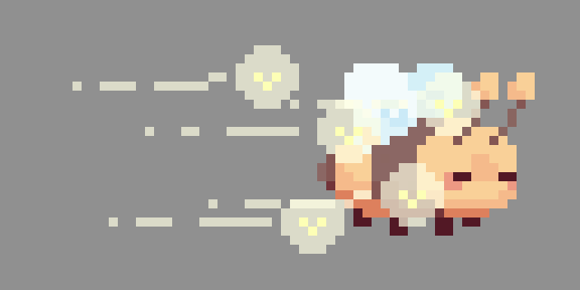

EMILY TRAN

BOOPING BEEP

Booping Beep is a 2D endless runner created for a 2025 Spring Game Jam hosted by SPIN_GameJam / GDC Northridge / VGDA. Players control a bee named Beep—dodging through endless obstacles and collecting power-ups along the way. Booping Beep was developed by a team of four within a 75-hour time limit, all participating in their first game jam. Booping Beep is also heavily inspired by the mobile game, Jetpack Joyride.
[ Play on itch.io! ]MY CONTRIBUTIONS
Below are the sprites and animations I designed and implemented for this project.

CREDITS
- Art, Animation, Design & QA – Emily Tran
- Art & QA – Nathan Lam
- UI, Music & Title Screen – Angela Santos
- Code & Game Mechanics – William Licup
SOFTWARE
Unity, Aseprite & FL Studio